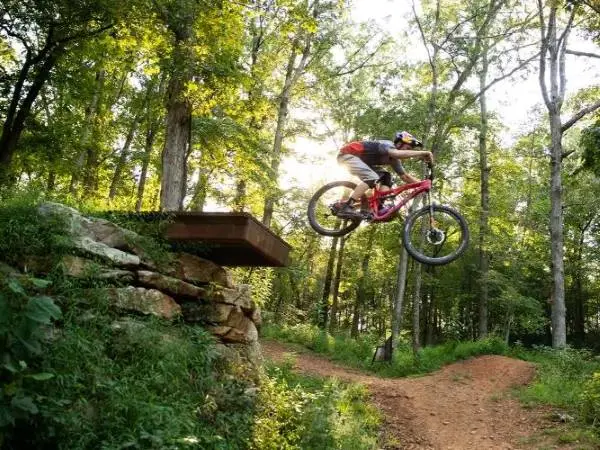

Surrounded by forests, meadows and trails, Beaver Lake attracts fishermen, hikers and water sports lovers.
Ride, run, walk and play on our extensive paved bike trails.

Whether it’s quaint local businesses or sprawling shopping malls, Rogers has what you are looking for.
Rogers has 24 parks, including skateboard and splah parks!
Come out to the Arvest Ballpark for a Naturals game.

Explore some of the best mountain biking trails in the region.
Local Weather
CST
| 3-Day Forecast | |
|---|---|